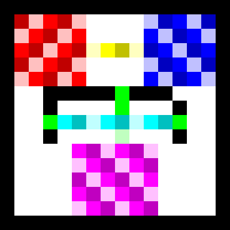

Programming, with unnecessary rules.
An esoteric programming language—usually shortened to esolang—is built to explore an unusual idea rather than to be practical. Some are jokes, some are puzzles, some deliberately make programming difficult, and some ask what code can look like in the first place.
That can mean programs made entirely from whitespace, colors, recipe instructions, Shakespearean dialogue, Scrabble scores, repeated words, or two-dimensional grids. The constraint is the point.
I made a small project for each language below. As you change the controls, the source view beside the project updates too, so you can see how the current choices change the strange-looking program. MOON, at the end, has a full editable in-browser interpreter.
COW
COW has twelve instructions, most written as capitalization variants of moo. The joke is that tiny changes in the same word become completely different operations.
A calculator makes the language's tiny vocabulary visible: the same handful of commands must do all of the memory movement and arithmetic. The interactive companion lets you change both numbers and the operation instead of running one frozen example.
Whitespace
Whitespace ignores visible characters and treats only spaces, tabs, and line feeds as instructions. A valid program can therefore look completely blank.
It is made entirely of spaces, tabs, and line feeds.
The source code is the visual gag, but the calculation is real: the original program uses integer arithmetic to determine a weekday. The companion also lets you inspect two related calendar facts from the same date.
Piet
Piet is a visual esolang inspired by Piet Mondrian. Instructions are encoded by transitions between colored regions rather than by words.

For a language where color changes are instructions, a color-mixing project is deliberately self-referential. The source stays visual, while the controls let you try all pairs of the traditional red-yellow-blue primaries.
Hexagony
Hexagony lays code out on a hexagonal grid and supports multiple instruction pointers moving through that geometry.
Hexagonal code calculating hexagonal numbers is exactly the kind of unnecessary thematic match that makes esolangs fun. Switch between ordinary and centered hexagonal sequences to see both formulas.
ArnoldC
ArnoldC replaces ordinary keywords with Arnold Schwarzenegger quotations. The result reads like a movie-script parody while still behaving like code.
A countdown gives the quote-based syntax something appropriately cinematic to do. Change both the launch number and the final Arnold line.
Beatnik
Beatnik assigns meaning to words according to their Scrabble scores. The vocabulary can look like free verse while the point values determine the instructions.
This one turns Beatnik back on itself: if Scrabble values control the language, the project should calculate Scrabble values. Enter any word or phrase and see exactly where the score comes from.
Chef
Chef programs are formatted like recipes. Ingredients hold values, while mixing bowls and recipe steps act as program state and operations.
A recipe language deserves a recipe calculation. Unlike the first prototype, both the number of batches and the recipe size can change—and so can the number lost to “quality control.”
Shakespeare
The Shakespeare Programming Language disguises programs as plays: variables become characters, blocks become scenes, and commands become dramatic dialogue.
The original “truth machine” idea becomes more interactive as a dramatic comparison: choose the two characters' values and the question they are asking, then let the play decide whether the proposition is “to be” or “not to be.”
LOLCODE
LOLCODE turns LOLcat-style internet speech into syntax: HAI, I HAS A, GIMMEH, and KTHXBYE replace more conventional keywords.
The language already sounds like a cat meme, so a cat-age calculator is almost obligatory. The staged option uses a more nuanced age curve than the deliberately silly ×7 mode.
Rockstar
Rockstar is designed so programs can read like overwrought rock lyrics. Variables and operations are phrased to look more like a song than source code.
This is intentionally literal: Rockstar gets Rock–Paper–Scissors. Pick your move first; the browser companion chooses its move only when the round starts.
INTERCAL
INTERCAL was created as a parody of programming languages. It deliberately uses strange notation and even treats the frequency of PLEASE as part of the joke.
The first source experiment reads and writes an integer in INTERCAL's famously odd style. The companion expands that into the calculator the name suggests, while keeping the needless politeness.
Ook!
Ook! uses only pairs built from Ook., Ook?, and Ook!. It was designed as an orangutan-friendly rephrasing of a tiny tape language.
If the entire syntax sounds like an orangutan, the program should at least be responsible for the banana budget. All three quantities are adjustable.
Chicken
Chicken encodes instructions by repeating the word chicken a particular number of times on each line. The source looks ridiculous by design.
The original source adds two one-digit inputs; the companion pushes the same arithmetic joke into a more useful chicken-themed question.
Malbolge
Malbolge was intentionally designed to be exceptionally difficult to program. Its name comes from the eighth circle of hell in Dante's Inferno.
There is no pretending that Malbolge is pleasant. The browser companion leans into the name with a configurable descent, while the source panel preserves the genuinely cursed-looking program.
JSFuck
JSFuck is valid JavaScript written using only six characters: [ ] ( ) ! +. Ordinary values have to be constructed from JavaScript's type-coercion quirks.
Enter a simple arithmetic expression. The browser safely evaluates it, then generates a deliberately inefficient JSFuck-style representation for a small nonnegative integer result.
Befunge-93
Befunge source is a two-dimensional grid. The instruction pointer can travel right, left, up, or down, so layout becomes part of control flow.
The first version merely printed the word “MAZE,” which missed the point. Here you actually navigate one. The visual source next to it shows why Befunge is fundamentally different from a normal one-dimensional language.
Brainfuck
Brainfuck uses only eight commands operating on a tape of memory cells. It is tiny enough to describe quickly and inconvenient enough to make even simple text manipulation interesting.
The original five-character program reads one character, adds three, and outputs it. The companion extends that idea to an entire message while letting you choose the shift and direction.
AHHH
AHHH uses patterns of uppercase and lowercase Hs. Even before you know the semantics, the source looks like somebody screaming at a compiler.
The name does most of the comedic work. The companion adds a second operation so it is more than a fixed “enter one number, get one answer” demo.
HQ9+
HQ9+ has four commands. H prints “Hello, world!”, Q prints the program's source, 9 prints “99 Bottles of Beer,” and + increments an accumulator.
This is one of the rare cases where a one-character program really is the whole joke. The control lets you compare all four instructions rather than showing only the song.
MOON
After playing with all of these languages, I made a tiny one of my own. MOON is a Brainfuck-inspired tape language whose source may contain only celestial emoji and whitespace.
Memory cells are “planets,” the pointer is the “astronaut,” and loops are “orbits.” Unlike the browser companions above, the editor here executes MOON source directly.
| Symbol | Name | Meaning |
|---|---|---|
| 🌒 | Wax | +1 |
| 🌘 | Wane | −1 |
| 🌑 | New Moon | set to 0 |
| 🚀 | Launch | move right |
| 🛸 | Return | move left |
| 🌕 | Transmit | output character |
| ⭐ | Beacon | output number |
| 📡 | Receive | read input |
| 🪐 | Orbit | loop start |
| ☄️ | Deorbit | loop end |
MOON is intentionally small enough that someone can understand the whole language from this page, change a program, and immediately see what the interpreter does. The example source files are included in the repository under moon/examples/.